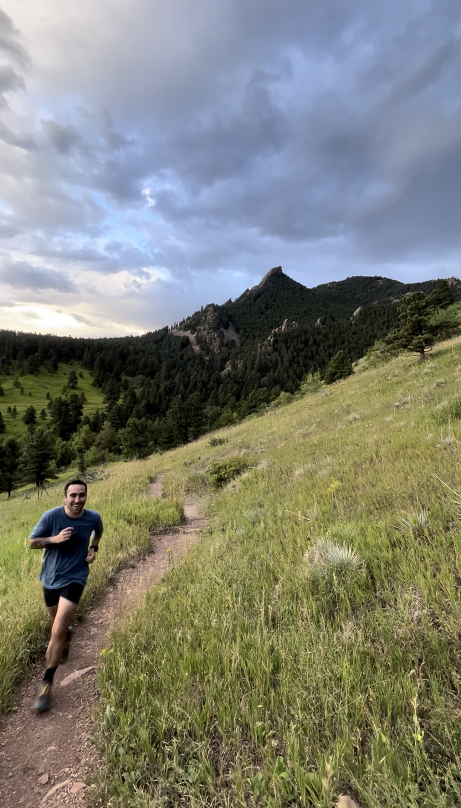

J. Rafael Fuentes
Postdoctoral Researcher, CU Boulder

Postdoctoral Researcher, CU Boulder

I'm interested in stellar and planetary interiors. Currently, I use a combination of numerical simulations and analytical methods to understand how convection in gas giants and white dwarfs leads to turbulent transport, compositional mixing, and induction of magnetic fields. Other projects include the spin up of superfluids in the context of pulsar glitches.
For a list of publications, you can visit my profile on ADS Library and Google ScholarWhen a multicomponent plasma freezes, the composition of the solid is typically different from the composition of the liquid. If the solid preferentially retains heavy elements, the liquid left behind is lighter and buoyant, driving convection. I have combined analytic theory and 3D simulations to investigate in great detail the transport properties of convection during crystallization in cooling white dwarfs. My results have shed light on whether convection is efficient enough to drive a magnetic dynamo. Below you can watch two videos of simulations of compositionally-driven convection in cooling white dwarfs (non-rotating case is on the left, and rotating case is on the right).
Convective flows in gas giant planets are driven by surface cooling. A front of convective flows advances inward into a neighboring stable region with a gradient of heavy elements (the planet’s core). I investigated several questions: How quickly does material in the convection zone move inward? How are heavy elements mixed through the convective boundary? Further, under certain circumstances, a gradient of heavy elements can trigger the formation of multiple convective layers (just like the many layers in a caffe latte which form due to the very same physics). Can the interior of gas giants undergo layered convection? The answers to these questions are key to understand why gas giants have dilute cores. Recently, I have used 3D simulations to show that the rapid rotation of gas giants can significantly supress the mixing of composition gradients. Below you can watch a video of a simulation of penetrative convection in rapidly rotating flows.
These are the slides for three lectures I gave on 2024 at CU Boulder as part of the courses ASTR 5700 - Stellar Astrophysics and ASTR 5400 -Introduction to Fluid Dynamics. You will need the app keynote to access them.


During my undergraduate years in Chile, I worked as a teaching assistant for many courses, including: Electricity and Magnetism, Statistical Mechanics, Stellar Astrophysics, Classical Mechanics, and General Astrophysics. Before leaving, I put together a collection of notes that included problem sets and solutions for some of those classes. I know that these notes are still being used, so I've made them available for download below. Just keep in mind that they're written in Spanish!
Electricity and Magnetism
General Astrophysics
Hey there! I'm a Postdoctoral Researcher at CU Boulder. Before, I was an undergraduate and MSc student at the Pontificia Universidad Católica de Chile, and received my PhD from McGill University in October 2022 under the supervision of Andrew Cumming. You can find my thesis in 400 words here.
In my free time, I take advantage of the many mountains around Boulder Colorado, for daily hikes and runs. I love trail running and in the past, I used to run long-distance (50km - 100 km) races in the Andes Mountains.
The best way to contact me is at jofu5477@colorado.edu.
My office is ECOT 213 in the Engineering building.
My mailing address is
Department of Applied Mathematics,
University of Colorado Boulder,
1111 Engineering Center, ECOT 225
Boulder, CO 80309-0526